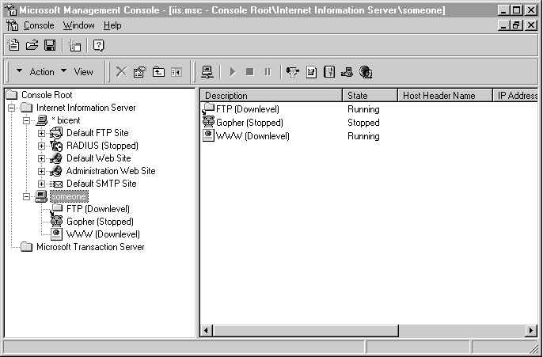

|
| ||
|
| ||
Microsoft Corporation
Updated: September 8, 1998
The authors of the Internet Information Server (IIS) 4.0 Resource Kit have produced this document on administering previous versions of IIS. This article is adapted from Chapter 7, "ISP Administration," of the Internet Information Server Resource Kit  , published by Microsoft Press, 1998. The Resource Kit provides a wealth of information on IIS and related technology development. Since the publication of this book, we have received a great deal of useful feedback on our instructions for remote administration of downlevel servers. In response to this feedback, we've revised and expanded these instructions for you.
, published by Microsoft Press, 1998. The Resource Kit provides a wealth of information on IIS and related technology development. Since the publication of this book, we have received a great deal of useful feedback on our instructions for remote administration of downlevel servers. In response to this feedback, we've revised and expanded these instructions for you.
Please send comments and suggestions for improving the next version of the Resource Kit to rkinput@microsoft.com.
The remote administration feature of IIS enables you to change access privileges, create Web sites, read log files, check or change properties, and start, stop, or pause servers from any computer on the network that is running IIS version 4.0 and Windows NT® version 4.0.
With the Microsoft Management Console (MMC) you can perform all these administrative tasks with servers running previous versions of IIS. For example, if you have five Web servers running IIS version 3.0 and you initially upgrade one of them to IIS version 4.0, you can administer all servers from the computer with the IIS version 4.0 MMC.
This folder acts as a staging area where you can rename the files you copy in Step 2, so that you don't overwrite existing files with the same name in your C:\WINNT\system32\inetsrv directory.
| Filename | Directory Location |
| Fscfg.dll
W3scfg.dll Gscfg.dll |
\I386\inetsrv\ |
| Fscfg.hlp
W3scfg.hlp Gscfg.hlp |
\I386\inetsrv\help\ |
| Old Name | New Name |
| Fscfg.dll | Fscfg3.dll |
| W3scfg.dll | W3scfg3.dll |
| Gscfg.dll | Gscfg3.dll |
| Fscfg.hlp | Fscfg3.hlp |
| W3scfg.hlp | W3scfg3.hlp |
| Gscfg.hlp | Gscfg3.hlp |
The Gopher dll (gscfg.dll) does not have to be renamed, but this has been done for consistency.
WWW3 = C:\WINNT\System32\inetsrv\w3scfg3.dll::SUPCFG:C:\WINNT\system32\inetsrv\w3scfg.dll FTP3 = C:\WINNT\System32\inetsrv\fscfg3.dll::SUPCFG:C:\WINNT\system32\inetsrv\fscfg.dll GOPHER3 = C:\WINNT\System32\inetsrv\gscfg3.dll
This step appends ::SUPCFG:newer dll to the existing DLL filename in the registry, indicating that the current files have been superseded.
Warning Editing the registry incorrectly can cause problems, including the failure of a Web site or FTP site. If you make mistakes, your Web site or FTP site's configuration could be damaged. You should edit registry entries only for settings that you cannot adjust in the user interface, and be very careful whenever you edit the registry directly.
At this point, you can see the Web server from MMC.
The Properties toolbar button in MMC is not available for downlevel sites. Instead, you must right-click the name of the site and select Properties. You can also select Properties on the Action menu.

Figure 7.2 Viewing and running the services on a remote computer running Windows NT Server
Did you find this material useful? Gripes? Compliments? Suggestions for other articles? Write us!
© 1999 Microsoft Corporation. All rights reserved. Terms of use.